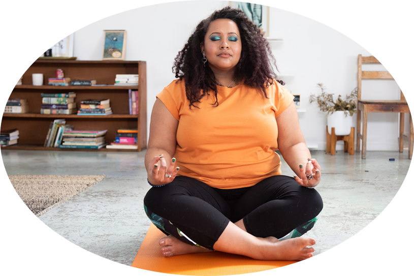
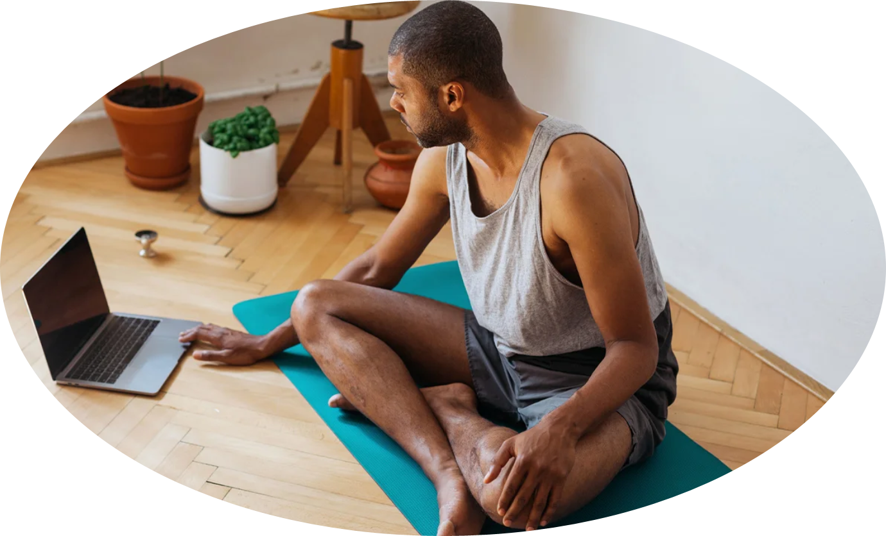

Life can be messy and tricky to navigate. While we can't always
control the things that happen, we can change how we relate to
life's ups and downs. It is difficult when most of our focus is
stolen through an overload of information and digital chatter.
That's where meditation can help to keep us in the present and less
drawn into our thoughts or reactivity and more about being able to
handle challenging times with self-awareness, understanding and a
renewed sense of perspective.
Meditation gives us space - to breath - to be present and helps us
make better choices to develop a little patience and learn be kinder
to ourselves and to others around us.
5 reasons to meditateThe BenefitsThe Science
Lower stress
Improve focus
Reduce brain chatter
Connect better
Improve wellbeing
Gives you a new way to look at things that cause stress
Builds skills to manage your stress
Lets you focus on the present
Helps you be more creative
Reduces negative feelings
Helps you be more patient
There are a lot studies that show support that meditation works.
Take Aravind Natarajan's 2023 paper on Heart rate variability during mindful breathing meditation
clearly showed that a person's heart rate slowed and rhythm frequency steadied during meditation.
For even more visuals check out the statistics on FinancesOnline from credible sources that shows
interest in meditation is not just a trend and is on the rise in 2024.
How
to meditate

The simplest way to meditate is to find a quiet space where you will not be disturbed for the length of time you have put aside, consider from 1 to 10 minutes.
Timing
If you are being guided, the person will indicate when the session begins and when the time is up by softly speaking to you or using chimes or a low sounding bell. If you are going solo, have a timer ready that is not too intrusive when that goes off or use one on your mobile phone.
Position & other things to consider
Find a comfortable position that you can maintain for the time allocated. The most popular are:
Seated on the floorSeated in a chairLaying downSit on the floor on the edge of a firm cushion or pillow with legs comfortably crossed or extended out in front or sit up against a wall.Sit in a chair with feet flat on the ground or place a cushion under your feet to support your back.Lay down on the floor on top of a towel or exercise mat (add a blanket over the top in the cooler months).
Eyes
Your eyes can be closed, use an eye pillow, or leave open is ok too just let your focus be soft like gently gazing at a mundane spot like a wall or the ceiling.
Sensations
Begin being aware of the ground beneath you, notice what areas of the body are touching the floor, towel or mat, try to soften your feet, buttocks, legs, back etc.
Breath
Let your breath be natural, you do not need to force that or change the rhythm, all you need do is become aware of when you breath in and when you breath out, nothing more and nothing less than that.
Thoughts
Let your thoughts pop into your head, and then let those go, do that again, and again and again…
That s it!
Types of meditation
There are many different types of meditations to explore:
Guided & unguidedBreath workBody scanVisualisationEveryday thingsThere are meditations where someone guides you through a meditation
or you can practice on your own. The one that best suits is different for everyone, some people
may prefer to stick with one while others like a variety, the best part is you decide
what feels right for you.There are many ways to work with your breath that can help create a calm
feeling and allow you to be present, because when you consciously think about your breath you are in
the now moment.Scanning the body is a great way to understand how much tension you may be
holding on to. When stressed, anxious or feeling pain, your muscle holds that as a memory, to release
while guided (or unguided) you can become more aware and learn that it is ok to release and reconnect
with your body.Most often a guided practice, involving a journey to a place or space of the
person's choosing, like their favourite place to unwind or feel calm, like the beach, or at the
top of a mountain.This takes many by surprise, but learning to do everyday things mindfully
with intent is a form of meditation, like eating slowly, eating and walking slowly.
When
to meditate
Any time is good to meditate, whether that's in the morning, after exercise or before bed.
Think of meditation as a way for you to reset for the day ahead or as a wind down before sleep.
The library provides a sample of audio recordings, you''ll learn meditation is not at about sitting for hours
in awkward positions!
Start with a short time like a minute and work up to 10 or 15 minutes if and when you are ready.
Sometimes meditating will feel easy and you'll wonder where the time went, other sessions will feel hard,
really that is meditation, it is about being in the moment, letting things be and going with whatever comes up.
Library
Here's a collection of guided audio meditation practices conveniently placed on YouTube.
Sunshine 01:47
Enjoy some sunshine to boost your mood and maintain vitamin D levels for healthy bones, learn more at Heathline
First is to be sun smart, if you're not sure the best time, checkout the UV rating based your location using the Cancer Council's SunSmart app.
Reset & Go 02:04
A good practice for before or after exercise.
A pep me up 01:01
Three-part breathing is great way to massage your lungs and increase oxygen in the blood.
Clear your head 01:14
Need to concentrate fast, give alternate nostril breathing a go, to clear your mind and improve focus.
To start you'll need to form a soft fist with your right hand then open out the thumb and the last two fingers.
Bring your hand to your face and begin the video
Walking it 01:35
01:35
An outdoor or indoor walking meditation.
This practice is best done barefoot or with socks on (when the weather is cooler), but you can also do this when outside with your trusty hiking boots on.
Time out 01:20
Sleep can be elusive, consider this practice before bed to gain more zzzz's
Candle gazing 01:22
A good practice for the end of the day just before bed that can help stimulate the pineal gland and active
melatonin secretion that helps reduce tension as can bring on the onset of sleepiness.
FAQs
Here's some frequently asked questions
The idea when sitting is to keep the back straight inline with your hips and to not hold onto your back muscles,
this can be easy for some and others will find the back aches, the more you regularly meditate the less you will tense up. Until that time, keep working with the sensations each session to discover what part of your back (top, middle, lower back, left side or right) or perhaps the hips (one side or both) you are holding on to and each time try to soften each spot more and more while each time trying to keep stay seated up right. The use of a wall can help with an addition of another pillow or cushion wedge behind the lower back to help if that area is prone to collapsing.
Sensations and fidgeting and that overwhelming desire to move are normal and part of the practice and those will come up often when first starting to practice meditating or even whether you have been doing that for years. At first, you may find you can barely stay being quiet or still for long, but if you keep coming back to your mat or seated position and practice, you can work up to a time that works best for you.
It is evitable as soon as we stop and try to be quiet and still, our minds wander, this is natural but even more so when we live in a time when our focus is constantly being stolen by technology and the desire to know what others are doing or saying. Meditation is allowing your thoughts to come up, all you need to realise is that meditation is not about, not thinking, as that is really hard to do, it is more about bringing space between your thoughts. Like a pause, that is where the reset can come in.
Give yourself the time to get there and feel comfortable meditating and learn what works for you, there is so much information around that talks about the ideal amount of time to meditate, lets throw that idea out now, as it is a very individual thing!
This is the good part, let your thoughts come up, the idea is to allow those to pop into your head and then out of your mind again. When you realise your mind has wandered into a story, just notice that, then with intention let that thought go, you can reconsider that later, let this time be yours. You may need to do that again, again and again, that is meditation, letting your thoughts in and the letting them go. Sounds simple, but it can also be hard. Over time like anything in life that you have learnt that took time to grasp, to understand and discover that is what meditation teaches us that we can still grow, expand and discover stuff about ourselves and learning to be ok in our inner space, when you shift to that mindset that is it.
Let's be real, please take the time to make yourself a priority. YOU are important. This is not about being selfish, but more about taking care of yourself and by doing that you may find you are better equipped to look out for others more without losing yourself.
The best way is to begin slowly, with small timeslots whether once a day for a minute or two in the morning or before bed. You may find just once a day is enough like 1 minute or 10 in the morning is all you need, whichever works for you, there is no magic formula, it is totally up to you. Oh, and don't forget if you take a break for a day or over the weekend, that's ok too, there are no hard and fast rules, the magic happens when you find a regular timeslot that works for you, but go with what is ok for you.
Resources
some great apps, books, videos and websites
Apps
Headspace Inc, Headspace - Sleep and Meditation app
SunSmart Global UV app

Books
Baron Baptiste, Journey into Power, 2002, Thorsons, Hammersmith, London
Johann Hari, Stolen Focus: Why You Can't Pay Attention. 2023, Bloomsbury Publishing
Richard Rosen, The Yoga of Breath: A Step-by-Step guide to Pranayama, 2002, Boston, Massachusetts
YouTube
Stolen focus with Johann Hari, 59:45s
Websites
Headspace, Meditation, 2024
Tara Brach, Ph.D, Guided Meditations, 2023
About
CLEAR HEADS
We offer a warm and inviting place to explore and empower people to recognise meditation as part of everyday self-care.
Our aim is to provide a fully self-serve interactive space for people to begin meditating right away but also to learn the benefits, the science stuff and discover different practice options are offered.
The site is for newcomers to find out how to start a meditation journey and wellbeing enthusiasts looking for a variety of options or those returning to discover new content with the regular updates.
Did you know meditation can assist with:
Anxiety conditions
Better focus and concentration
Emotional wellbeing
Pain management
Credentials
MBSR (Mindfulness Based Stress Reduction) certified
iRest® Meditation certified
Experience
Between us we have over 40 years of experience in the health and wellbeing industry!
We all are meditators and use different practice styles for ourselves and clients.
A big thank you to Mary, she has been working hard recording and sharing her unique guided meditations,
those can now be found uploaded in the library.